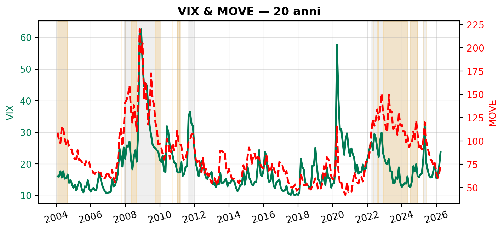
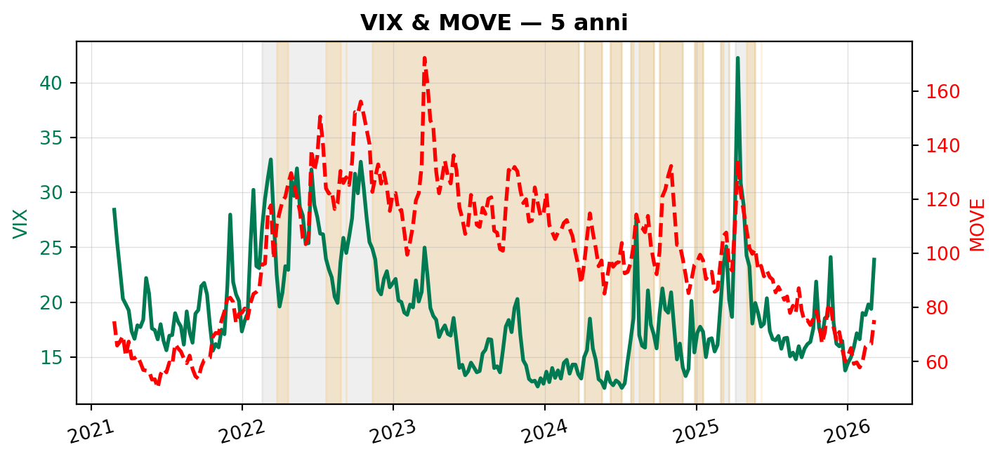
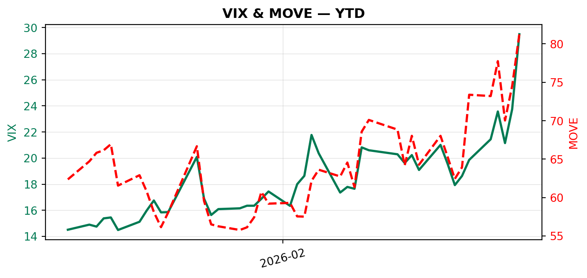
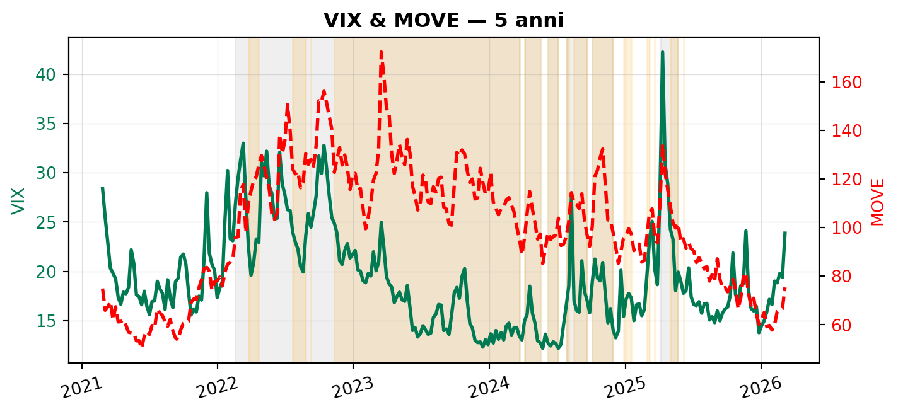
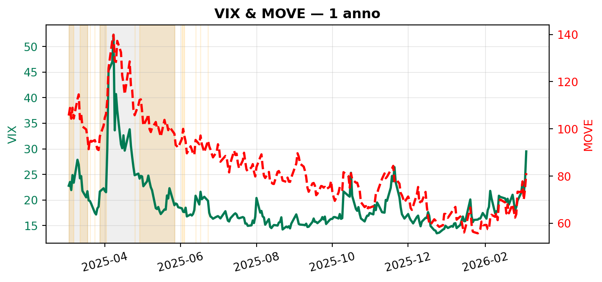
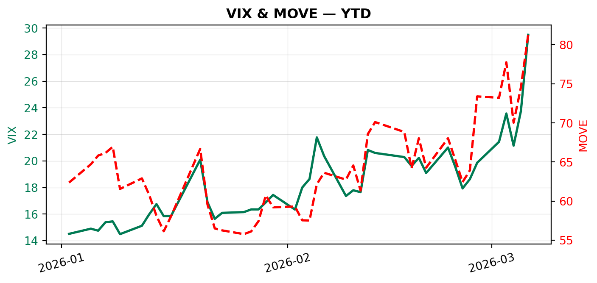

VIX & MOVE — 4 periodi
Mercati finanziari
Volatilità
VIX
Che cosa misurano il VIX e il MOVE, come si calcolano e come si sono mossi insieme in quattro periodi.
Paolo Volterra ![]()
Il CBOE Volatility Index è chiamato “indice della paura” perché misura la volatilità implicita delle opzioni sull’S&P 500: quando i mercati azionari temono shock o crisi, il VIX sale rapidamente. Per questo spesso viene definito “Bond market fear gauge”, “VIX del mercato obbligazionario”, “indice della paura dei tassi”
Il ICE BofA MOVE Index è l’equivalente nel mercato obbligazionario.
Il MOVE misura la volatilità implicita delle opzioni sui Treasury USA (soprattutto su scadenze 2, 5, 10 e 30 anni).
I significati economici dei 2 indici sono leggermente diversi:
VIX alto → paura su crescita, utili, recessione, shock finanziari
MOVE alto → paura su inflazione, politica monetaria, tassi e debito
Esempio tipico:
crisi finanziaria → VIX esplode
shock inflazionistico o cambio politica Fed → MOVE esplode
Negli ultimi anni è successo spesso che il MOVE fosse molto alto (tensioni sui tassi) mentre il VIX restasse relativamente basso. Segno che il rischio era nei mercati dei bond più che nelle azioni.
Guardando insieme CBOE Volatility Index e ICE BofA MOVE Index, emerge una regolarità empirica interessante: quando il MOVE supera circa 120–130 il mercato dei tassi è in regime di stress. Non è una soglia ufficiale, ma molti strategist la usano come riferimento.
5.1 Regimi tipici del MOVE
| Regime MOVE | Intervallo | Interpretazione sintetica | Cosa implica |
|---|---|---|---|
| Tranquillo | MOVE < 80 | Mercato dei Treasury tranquillo | Volatilità dei tassi bassa, politica monetaria percepita come prevedibile |
| Attenzione | 80 ≤ MOVE ≤ 120 | Regime di attenzione | Il mercato sta ricalibrando aspettative su inflazione e/o traiettoria dei tassi |
| Stress | MOVE > 120 | Regime di stress | Curva Treasury instabile, aumento del rischio di incidenti di liquidità e stress sistemico nei mercati |
5.2 Alcuni episodi storici
Global Financial Crisis
- MOVE molto alto
- VIX estremamente alto Crisi finanziaria sistemica.
COVID-19 Market Crash
- VIX ~80
- MOVE oltre 160 Shock globale di liquidità.
US Inflation Shock
- MOVE sopra 150
- VIX relativamente moderato Il rischio era nei tassi, non nelle azioni.
US Regional Bank Crisis
- MOVE > 180 per qualche giorno
- VIX non estremo Stress localizzato nel sistema bancario e nei Treasury.
5.3 Lettura congiunta VIX–MOVE
Una griglia utile:
| Situazione | Interpretazione |
|---|---|
| VIX ↑ / MOVE ↑ | crisi sistemica |
| VIX ↑ / MOVE normale | shock equity |
| MOVE ↑ / VIX normale | shock macro (inflazione / tassi) |
| entrambi bassi | regime stabile |
Negli ultimi anni il mercato ha vissuto la prima grande crisi della volatilità dei tassi dopo decenni, mentre l’equity è rimasto relativamente stabile.
5.4 Perché questo è importante
Quando il MOVE sale molto succedono spesso tre cose:
liquidità più fragile nei Treasury
stress nei fondi obbligazionari e nelle banche
maggiore probabilità di incidenti finanziari
Per questo molti desk macro guardano prima il MOVE e poi il VIX.
Nei grafici qui sotto:
- bande grigie → stress generale (MOVE > 95)
- bande arancioni → divergenza tassi–equity (MOVE > 95 e VIX < 25)
6 Grafici (VIX e MOVE insieme)
Nota: VIX e MOVE hanno scale diverse. Qui li metto insieme con doppio asse Y (VIX a sinistra, MOVE a destra).
6.1 1) ~20 anni
I quattro picchi strutturali del ventennio:
set 2008 — fallimento Lehman Brothers, VIX 81 e MOVE 265, entrambi ai massimi storici, con correlazione quasi perfetta tra panico azionario e obbligazionario;
2010–2011 — crisi del debito sovrano di Grecia, Irlanda e Italia con contagio all’eurozona, VIX tra 15 e 48 per oltre un anno, MOVE fino a 125;
mar 2020 — pandemia COVID-19, VIX tocca 83 (massimo assoluto della serie scaricata), MOVE supera 164;
2022 — ciclo di rialzi Fed, MOVE raggiunge 183 (VIX contestuale: 24) senza un corrispondente panico azionario: prima volta nel ventennio in cui il mercato dei tassi è in crisi strutturale mentre l’equity rimane relativamente ordinato.
6.2 2) 5 anni

Il quinquennio isola la sequenza di shock post-pandemia non leggibili nella scala ventennale.
Feb–mar 2022: invasione russa dell’Ucraina, VIX 36, MOVE sale a 140 (da 79 di inizio anno, +76%);
Set–ott 2022: crisi dei Gilt britannici dopo il “mini-budget” Truss, combinata con la Fed al 3%+ in pochi mesi — MOVE oltrepassa 161;
Mar 2023: fallimento SVB, Signature Bank, First Republic e acquisizione forzata di Credit Suisse — MOVE 183 (massimo storico della serie); VIX 27, contenuto rispetto ai livelli obbligazionari, segnale che il mercato azionario non prezza un rischio sistemico pieno;
Ott 2023: attacco Hamas del 7 ottobre, escalation mediorientale — MOVE rimane elevato su base strutturale;
Ago 2024: unwinding del carry trade sullo yen, VIX chiusura giornaliera a 39 mentre MOVE resta a 121 — disallineamento tra volatilità azionaria e obbligazionaria, con il sell-off guidato da posizionamento speculativo e non da fondamentali macro;
Nov 2024: elezioni USA, vittoria Trump — VIX si sgonfia rapidamente sul “Trump trade” (deregulation e tagli fiscali attesi).
6.3 3) 1 anno
Nel periodo (VIX tra 13 e 52; MOVE tra 56 e 140):
Gen 2025: lancio di DeepSeek R1 — sell-off tecnologico; VIX sale a 18, MOVE a 97, confermando un evento settoriale senza trasmissione al mercato obbligazionario;
Gen–feb 2025: tariffe USA del 25% su Canada e Messico e +10% sulla Cina — VIX oscilla, MOVE si rialza perché il mercato rivede le aspettative di taglio Fed (l’inflazione da dazi riduce lo spazio di manovra);
Mar–giu 2025: minacce tariffarie verso l’UE su acciaio e automobili — MOVE consolida su livelli elevati, il mercato obbligazionario non riesce a prezzare una traiettoria dei tassi stabile;
Est–aut 2025: Fed ferma in modalità “higher for longer”; la forbice persistente tra i due indici riflette il nuovo regime di incertezza strutturale sul lato tassi rispetto al decennio 2012–2021.
6.4 4) YTD

Periodo in corso al 6 Mar 2026. VIX nel range 14–29, MOVE nel range 56–81; ultima lettura disponibile: VIX 29, MOVE 81. Periodo in corso (gennaio–marzo 2026). Il livello iniziale dei due indicatori riflette il contesto ereditato dalla fase finale del 2025: la volatilità dei tassi rimane relativamente elevata mentre la volatilità azionaria si colloca su livelli moderati. Il ICE BofA MOVE Index si mantiene nell’intervallo 60–75, segnalando un mercato obbligazionario ancora sensibile alle revisioni delle aspettative sui tassi e sul ciclo macroeconomico. Il CBOE Volatility Index oscilla invece tra 15 e 23, livelli coerenti con una fase di cautela ma non di stress nel mercato azionario.
Nel corso del trimestre si osserva una dinamica relativamente parallela dei due indici, con alcuni episodi di incremento temporaneo della volatilità che tuttavia rientrano rapidamente. L’assenza di picchi estremi suggerisce che, almeno nella fase iniziale dell’anno, i mercati stanno operando in un regime di incertezza gestibile piuttosto che di vera e propria tensione finanziaria.
La configurazione complessiva resta tuttavia coerente con il regime macro degli ultimi anni, caratterizzato da una volatilità dei tassi strutturalmente più elevata rispetto alla volatilità azionaria. In altre parole, il principale fattore di rischio percepito dai mercati continua a riguardare la traiettoria della politica monetaria e delle condizioni finanziarie, più che il rischio immediato di shock sull’equity.
In questa fase il grafico YTD svolge quindi soprattutto una funzione di monitoraggio del regime di volatilità corrente. Eventuali variazioni più marcate di MOVE o un ampliamento della divergenza tra i due indici potrebbero segnalare nuove revisioni delle aspettative macro-finanziarie nel corso dell’anno.
| Evento | Finestra | VIX_max | VIX_data | MOVE_max | MOVE_data | VIX_min | VIX_al_picco_MOVE | MOVE_min | VIX_last | MOVE_last |
|:------------------------------------|:---------------------------------------------|:----------|:-----------|-----------:|:------------|:----------|:--------------------|:-----------|:-----------|:------------|
| Massimo assoluto | 2004-01-02 → 2026-03-06 | 82.69 | 2020-03-16 | 264.6 | 2008-10-10 | | | | | |
| Lehman / GFC | 2008-09-01 → 2008-11-30 | 80.86 | 2008-11-20 | 264.6 | 2008-10-10 | | | | | |
| Debito sovrano EU | 2010-01-01 → 2011-12-31 | 48.00 | | 125.2 | | 14.62 | | | | |
| COVID shock | 2020-02-01 → 2020-04-30 | 82.69 | 2020-03-16 | 163.7 | 2020-03-09 | | | | | |
| Ciclo Fed / inflazione (picco MOVE) | 2022-01-01 → 2023-06-30 | | | 182.64 | 2023-03-20 | | 24.15 | | | |
| Invasione Ucraina (finestra) | 2022-02-01 → 2022-04-15 | 36.45 | | 140.03 | | | | | | |
| Crisi Gilt UK (finestra) | 2022-09-01 → 2022-11-30 | | | 160.72 | | | | | | |
| SVB / Credit Suisse (finestra) | 2023-03-01 → 2023-04-30 | 26.52 | | 182.64 | | | | | | |
| Carry trade yen (finestra) | 2024-08-01 → 2024-08-31 | 38.57 | | 121.22 | | | | | | |
| DeepSeek (finestra) | 2025-01-20 → 2025-01-31 | 17.90 | | 96.78 | | | | | | |
| Range ultimo anno | 2025-03-03 → 2026-03-06 | 52.33 | | 139.88 | | 13.47 | | 55.77 | | |
| Range YTD | 2026-01-02 → 2026-03-06 (ultimo: 6 Mar 2026) | 29.49 | | 81.26 | | 14.49 | | 55.77 | 29.49 | 81.26 |

